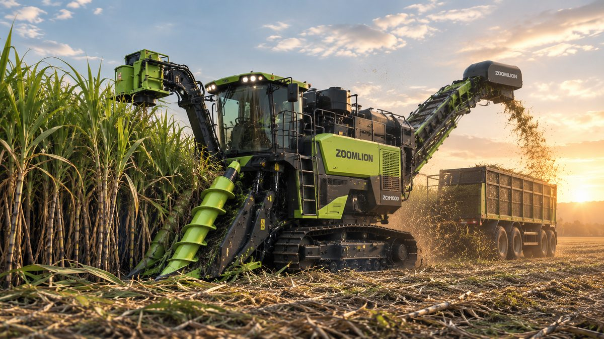

Kejar Swasembada Gula, Mekanisasi Panen Tebu Jadi Kunci
Pemerintah menargetkan peremajaan 100 ribu hektare tebu per tahun. Mekanisasi panen jadi salah satu penentu keberhasilannya.
Chasing Sugar Self-Sufficiency: Why Mechanised Sugarcane Harvesting Is Key
The government aims to replant 100,000 hectares of sugarcane a year. Mechanised harvesting is one of the keys to success.
冲刺食糖自给：甘蔗机械化收获是关键
印尼政府计划每年翻新10万公顷甘蔗。机械化收获是成功的关键之一。

Gula menjadi salah satu komoditas yang paling disorot tahun ini. Pemerintah menargetkan swasembada gula konsumsi dapat tercapai pada 2027, dan berbagai program percepatan mulai dijalankan sejak 2026.
Peremajaan 100 Ribu Hektare per Tahun
Menteri Pertanian Andi Amran Sulaiman menargetkan program bongkar ratoon, yaitu mengganti tanaman tebu lama yang produktivitasnya sudah menurun dengan benih unggul, seluas 100 ribu hektare setiap tahun. Secara bertahap, peremajaan ditargetkan mencapai sekitar 300 ribu hektare dalam tiga tahun mulai 2026.
Program ini tidak hanya soal benih. Peremajaan akan disertai pengolahan lahan, irigasi pompa, mekanisasi pertanian, dan revitalisasi pabrik gula.
Kenapa Mekanisasi Panen Penting?
Tenaga Tebang Makin Sulit Dicari
Panen tebu di Indonesia masih banyak mengandalkan tenaga tebang manual. Sejumlah pengamat menilai tenaga tebang mulai beralih ke sektor lain seperti konstruksi, sehingga mesin panen tebu (cane harvester) dipandang sebagai jalan keluar agar panen tetap berjalan.
Panen Lebih Terjadwal
Tebu yang sudah matang perlu ditebang dan dikirim ke pabrik tepat waktu agar mutunya terjaga. Mesin panen membantu proses tebang dan muat berjalan lebih cepat dan mudah dijadwalkan.
Lahan Makin Luas
Dengan target peremajaan ratusan ribu hektare, kebutuhan tenaga dan waktu panen ikut bertambah. Mekanisasi membuat pekerjaan di lahan luas lebih mudah direncanakan.
Pilihan Mesin Panen Tebu Zoomlion
Zoomlion baru saja meluncurkan mesin panen tebu C600 di pameran AGRITECHNICA ASIA 2026 di Bangkok sebagai bagian dari solusi mekanisasi tebu untuk Asia Tenggara. Berikut pilihan mesin panen tebu Zoomlion yang tersedia melalui DASS.
C600
Mesin panen tebu roda bertenaga 210 HP untuk lahan kecil hingga menengah dengan jarak antarbaris minimal 1,1 m. Dilengkapi sistem Z-Pilot dengan fitur kemudi otomatis dan penjadwalan kerja pintar. Lihat detail C600.
C610
Mesin panen tebu roda bertenaga 210 HP dengan hopper 2,1 m³ dan kecepatan jalan hingga 18 km/jam, praktis untuk berpindah antarpetak. Lihat detail C610.
C620
Mesin panen tebu crawler bertenaga 260 HP dengan kapasitas panen hingga 25 ton per jam. Roda rantainya memberi tekanan tanah rendah sehingga tetap andal di lahan tebu basah. Lihat detail C620.
Kesimpulan
Target swasembada gula membutuhkan peningkatan produktivitas di semua tahap, dari benih hingga panen. Di tengah keterbatasan tenaga tebang, mesin panen tebu menjadi investasi yang semakin relevan bagi perkebunan dan pabrik gula.
Sedang merencanakan mekanisasi panen tebu? PT Diesel Agri Sukses Sejahtera adalah distributor resmi Zoomlion. Hubungi kami untuk konsultasi dan penawaran harga.
Butuh saran? Hubungi kami.
Sumber: ANTARA News, Kementerian Pertanian, Investortrust, TIMES Indonesia, PR Newswire.
Sugar is one of the most closely watched commodities this year. The government is targeting self-sufficiency in consumer sugar by 2027, and a range of acceleration programmes began in 2026.
Replanting 100,000 Hectares a Year
Agriculture Minister Andi Amran Sulaiman has set a target for ratoon replacement, replacing ageing, less productive cane with improved seed cane, across 100,000 hectares each year. In stages, replanting is expected to cover around 300,000 hectares over three years starting in 2026.
The programme is not only about seed cane. Replanting will be accompanied by land preparation, pump irrigation, farm mechanisation, and the revitalisation of sugar mills.
Why Mechanised Harvesting Matters
Cane Cutters Are Harder to Find
Sugarcane harvesting in Indonesia still relies heavily on manual cutters. Some observers note that cutters are moving to other sectors such as construction, so cane harvesters are seen as the way to keep harvests on track.
Better-Scheduled Harvests
Mature cane needs to be cut and delivered to the mill on time to preserve its quality. Harvesters make cutting and loading faster and easier to schedule.
Larger Areas
With replanting targets of hundreds of thousands of hectares, the labour and time needed for harvest grow too. Mechanisation makes work across large areas easier to plan.
Zoomlion Sugarcane Harvester Options
Zoomlion recently launched the C600 sugarcane harvester at AGRITECHNICA ASIA 2026 in Bangkok as part of its sugarcane mechanisation solution for Southeast Asia. Here are the Zoomlion sugarcane harvesters available through DASS.
C600
A 210 HP wheeled sugarcane harvester for small to medium fields with row spacing of at least 1.1 m. Equipped with the Z-Pilot system for automatic steering and smart work scheduling. View C600 details.
C610
A 210 HP wheeled sugarcane harvester with a 2.1 m³ hopper and a travel speed of up to 18 km/h, making it easy to move between plots. View C610 details.
C620
A 260 HP tracked sugarcane harvester with a harvesting capacity of up to 25 tonnes per hour. Its tracks exert low ground pressure, so it stays reliable in wet cane fields. View C620 details.
Conclusion
Sugar self-sufficiency requires higher productivity at every stage, from seed cane to harvest. With cane cutters in short supply, sugarcane harvesters are an increasingly relevant investment for plantations and sugar mills.
Planning to mechanise your cane harvest? PT Diesel Agri Sukses Sejahtera is the authorised Zoomlion distributor. Contact us for advice and a quotation.
Need advice? Contact us.
Sources: ANTARA News, Kementerian Pertanian, Investortrust, TIMES Indonesia, PR Newswire.
食糖是今年最受关注的大宗商品之一。印尼政府的目标是在2027年实现消费用糖自给，多项加速计划已于2026年启动。
每年翻新10万公顷
印尼农业部长安迪·阿姆兰·苏莱曼设定了宿根更新（即用优良蔗种替换产量下降的老蔗）目标：每年10万公顷。按计划，从2026年起的三年内分阶段翻新约30万公顷。
该计划不只涉及蔗种，还将配套整地、泵站灌溉、农业机械化以及糖厂改造。
为什么机械化收获很重要？
砍蔗工越来越难找
印尼的甘蔗收获仍主要依靠人工砍伐。一些观察人士认为，砍蔗工正流向建筑等其他行业，因此甘蔗收获机被视为保障收获顺利进行的出路。
收获更有计划
成熟的甘蔗需要按时砍伐并送往糖厂，才能保证品质。收获机让砍伐和装运更快，也更便于安排。
种植面积更大
翻新目标达数十万公顷，收获所需的人力和时间也随之增加。机械化让大面积作业更易于规划。
中联重科甘蔗收获机选型
中联重科近期在曼谷AGRITECHNICA ASIA 2026展会上发布了C600甘蔗收获机，作为其面向东南亚的甘蔗机械化解决方案的一部分。以下是可通过DASS购买的中联重科甘蔗收获机。
C600
210马力轮式甘蔗收获机，适用于行距不小于1.1米的中小型地块。配备Z-Pilot系统，具备自动驾驶和智能作业调度功能。查看C600详情。
C610
210马力轮式甘蔗收获机，配备2.1立方米集料斗，行驶速度最高18公里/小时，转场便捷。查看C610详情。
C620
260马力履带式甘蔗收获机，收获能力最高每小时25吨。履带接地压力低，在湿润的蔗田中依然可靠。查看C620详情。
结论
实现食糖自给需要从蔗种到收获各环节全面提高生产力。在砍蔗工短缺的情况下，甘蔗收获机对种植园和糖厂而言是越来越值得的投资。
正在规划甘蔗机械化收获？ PT Diesel Agri Sukses Sejahtera 是中联重科授权经销商。欢迎联系我们获取咨询和报价。
需要建议？联系我们。
资料来源： ANTARA News, Kementerian Pertanian, Investortrust, TIMES Indonesia, PR Newswire.